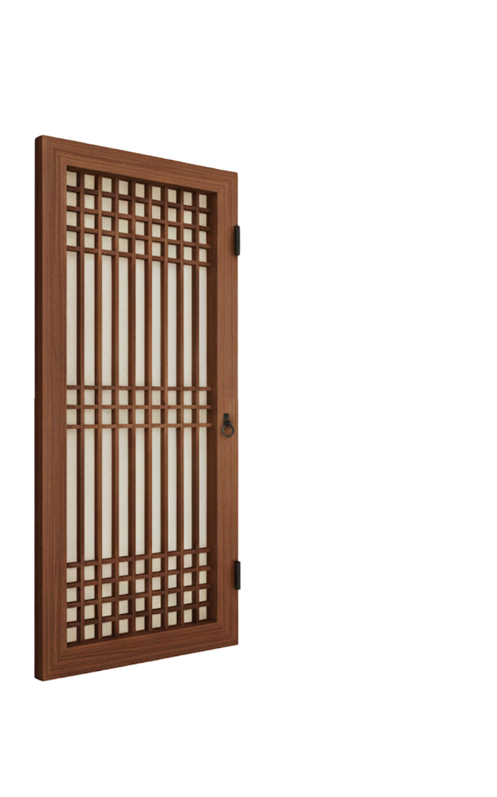

K-Nunchi Survival
Test your knowledge of Korean etiquette and "Nunchi"!

Test your knowledge of Korean etiquette and "Nunchi"!
You will be given several situations that you may encounter in Korea. After reading each situation, please choose the answer that reflects what Koreans usually do.
Your K-Nunchi* level will be determined based on the number of correct answers.
Please note that these answers may not always be the only solution. However, they represent the unspoken rules generally followed in most Korean situations.